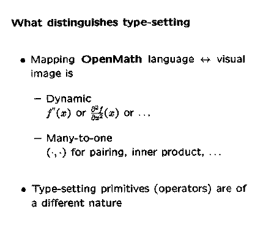

A. van Leeuwen, M Roelofs: Typesetting and OpenMath
Slides presented at OpenMath Workshop 3 by Andre van Leeuwen/Marcel Roelofs.
(full size, 11k)
(original, 14k)
(full size, 9k)
(original, 11k)
(full size, 13k)
(original, 15k)
(full size, 10k)
(original, 12k)

(full size, 8k)
(original, 10k)
(full size, 8k)
(original, 10k)
(full size, 8k)
(original, 10k)
(full size, 8k)
(original, 10k)
This page is part of the OpenMath Web archive,
and is no longer kept up to date.